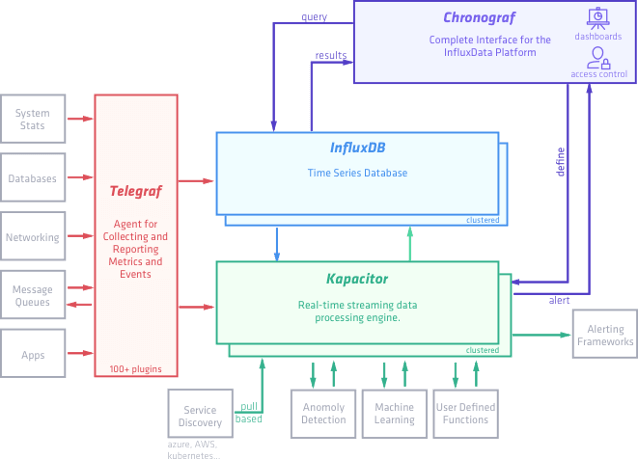
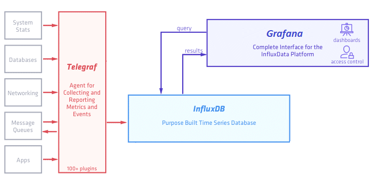

Мониторинг за час: influxdb, telegraf, grafana
В этом посте описаны установка и настройка связки технологий, позволяющих быстро и достаточно просто получить работающий сервис мониторинга.
Будем использовать:
telegraf - агент по сбору данных
InfluxDB - база, предназначенная для хранения временных рядов (time series)
Grafana - для отображения метрик
В заключении приведен скрипт на ansible, позволяющий развернуть все это легким движением руки.
Предусловия
Все дальнейшие действия выполняются на машине с установленным CentOS7/Red Hat 7.
На сайте influxdata - разработчика InfluxDB и Telegraf представлена следующая схема:

Называют они этот стек технологий TICK stack - по первым буквам (Telegraf, Influxdb, Chronograf, Kapacitor).
В рамках этого поста мы упрощаем эту схему и она принимает следующий вид:

Во-первых мы пока убираем Kapacitor - движок для real-time обработки получаемых данных - его рассмотрим отдельно.
Во-вторых вместо предлагаемого influxdata дашборда Chronograf будем использовать более мощную и гибкую Grafana (хотя это по большому счету - дело вкуса).
Установка и настройка InfluxDB
Начнем с базы, в которой будут храниться результаты наших измерений.
Добавим репозиторий в менеджер пакетов YUM:
cat <<EOF | sudo tee /etc/yum.repos.d/influxdb.repo
[influxdb]
name = InfluxDB Repository - RHEL \$releasever
baseurl = https://repos.influxdata.com/rhel/\$releasever/\$basearch/stable
enabled = 1
gpgcheck = 1
gpgkey = https://repos.influxdata.com/influxdb.key
EOF
Установим influxdb и запустим сервис:
sudo yum install influxdb
sudo systemctl start influxdb
Чтобы сервис работал после перезагрузки машины, введем команду:
sudo systemctl enable influxdb
Проверяем, что все прошло хорошо, выполнив в консоли команду:
influx
Видим:
Connected to http://localhost:8086 version 1.3.5
InfluxDB shell version: 1.3.5
Создадим нашу первую базу командой:
> create database testdb
Посмотрим что получилось:
> show databases
name: databases
name
----
_internal
testdb
Видим список:отать с базой, ее сначала нужно выбрать - для этого выполняем команду:
> use testdb
Using database testdb
Попробуем добавить в базу значения. В документации указан такой формат:
<measurement>[,<tag-key>=<tag-value>...] <field-key>=<field-value>[,<field2-key>=<field2-value>...] [unix-nano-timestamp]
В рамках статьи мы рассматриваем общий случай добавления измерений, очень подробный рассказ о всех возможных форматах команды - в документации здесь.
Выполняем команды:
> insert temperature,room=bedroom,flat=218,house=21 value=28 1507098529730843121
> insert temperature,room=kitchen,flat=218,house=21 value=24
> insert temperature,room=bedroom,flat=212,house=21 value=21
После этого смотрим какие измерения стали доступны:
> show measurements
name: measurements
name
----
temperature
Документация обещает нам SQL-like синтаксис, пробуем:
> select * from temperature
name: temperature
time flat house room value
---- ---- ----- ---- -----
1507098529730843121 218 21 bedroom 28
1507098545001810563 218 21 kitchen 24
1507098556441285440 212 21 bedroom 21
На что обращаем внимание: колонка time в таблице сформировалась автоматически - время мы указали только в первом случае, в остальных - добавилось текущее. Каждый тег стал "колонкой" в табличном представлении, результат измерения попал в колонку value.
Новые теги могут добавляться с любого момента, например так:
> insert temperature,room=bedroom,flat=215,house=21,city=SPb value=20
> select * from temperature
name: temperature
time city flat house room value
---- ---- ---- ----- ---- -----
1507098529730843121 218 21 bedroom 28
1507098545001810563 218 21 kitchen 24
1507098556441285440 212 21 bedroom 21
1507099214268247583 SPb 215 21 bedroom 20
Используя SQL-like синтаксис легко можем получить выборку по квартире:
> select * from temperature where flat='218'
name: temperature
time city flat house room value
---- ---- ---- ----- ---- -----
1507098529730843121 218 21 bedroom 28
1507098545001810563 218 21 kitchen 24
И даже посчитать среднюю температуру по больнице:
> select mean(value) from temperature where flat='218'
name: temperature
time mean
---- ----
0 26
Также можно добавлять данные через REST API:
curl -i -XPOST 'http://localhost:8086/write?db=testdb' --data-binary 'temperature,room=bathroom,flat=213,house=22 value=20'
И читать данные через REST API в формате JSON:
curl -i -XPOST http://localhost:8086/query --data-urlencode "db=testdb" --data-urlencode "q=select * from temperature where room='bathroom'"
HTTP/1.1 200 OK
Connection: close
Content-Type: application/json
Request-Id: 6c6302b8-a8d1-11e7-a7f7-000000000000
X-Influxdb-Version: 1.3.5
Date: Wed, 04 Oct 2017 06:58:27 GMT
Transfer-Encoding: chunked
{"results":[{"statement_id":0,"series":[{"name":"temperature","columns":["time","city","flat","house","room","value"],"values":[["2017-10-04T06:54:16.383413704Z",null,"213","22","bathroom",20]]}]}]}
На этом краткое знакомство с базой InfluxDB можно закончить, очень много подробной информации при необходимости можно найти в документации. А мы пойдем дальше.
Установка и настройка Telegraf
Telegraf - агент для сбора данных, у него есть множество плагинов как для ввода так и для вывода. Yum-репозиторий influxdata мы уже добавили в самом начале, так что сразу установим telegraf.
sudo yum install telegraf
Далее надо сгенерировать конфигурационный файл. Для этого наберем команду:
telegraf -sample-config telegraf.conf --input-filter cpu:mem:exec --output-filter influxdb > telegraf.conf
Команда означает следующее: ув. телеграф, будь добр - создай нам конфигурационный файл telegraf.conf, в котором задействуй плагины ввода данных cpu, mem и exec (их вообще очень много, можно хоть данные с сервера minecraft собирать), вывода данных - influxdb (можно еще в grafite, elasticsearch и много куда еще).
Встроенные плагины cpu и mem отвечают за сбор данных об активности процессора и памяти соответственно. А вот плагин exec - предоставляет возможность использовать для сбора данных произвольные скрипты.
В сгенерированном файле видим следующее:
# Telegraf Configuration
#
# Telegraf is entirely plugin driven. All metrics are gathered from the
# declared inputs, and sent to the declared outputs.
#
# Plugins must be declared in here to be active.
# To deactivate a plugin, comment out the name and any variables.
#
# Use 'telegraf -config telegraf.conf -test' to see what metrics a config
# file would generate.
#
# Environment variables can be used anywhere in this config file, simply prepend
# them with $. For strings the variable must be within quotes (ie, "$STR_VAR"),
# for numbers and booleans they should be plain (ie, $INT_VAR, $BOOL_VAR)
# Global tags can be specified here in key="value" format.
[global_tags]
# dc = "us-east-1" # will tag all metrics with dc=us-east-1
# rack = "1a"
## Environment variables can be used as tags, and throughout the config file
# user = "$USER"
# Configuration for telegraf agent
[agent]
...
###############################################################################
# OUTPUT PLUGINS #
###############################################################################
# Configuration for influxdb server to send metrics to
[[outputs.influxdb]]
## The HTTP or UDP URL for your InfluxDB instance. Each item should be
## of the form:
## scheme "://" host [ ":" port]
##
## Multiple urls can be specified as part of the same cluster,
## this means that only ONE of the urls will be written to each interval.
# urls = ["udp://localhost:8089"] # UDP endpoint example
urls = ["http://localhost:8086"] # required
## The target database for metrics (telegraf will create it if not exists).
database = "telegraf" # required
## Name of existing retention policy to write to. Empty string writes to
## the default retention policy.
retention_policy = ""
## Write consistency (clusters only), can be: "any", "one", "quorum", "all"
write_consistency = "any"
## Write timeout (for the InfluxDB client), formatted as a string.
## If not provided, will default to 5s. 0s means no timeout (not recommended).
timeout = "5s"
...
###############################################################################
# PROCESSOR PLUGINS #
###############################################################################
...
###############################################################################
# AGGREGATOR PLUGINS #
###############################################################################
...
###############################################################################
# INPUT PLUGINS #
###############################################################################
# Read metrics about cpu usage
[[inputs.cpu]]
## Whether to report per-cpu stats or not
percpu = true
## Whether to report total system cpu stats or not
totalcpu = true
## If true, collect raw CPU time metrics.
collect_cpu_time = false
## If true, compute and report the sum of all non-idle CPU states.
report_active = false
# Read metrics from one or more commands that can output to stdout
[[inputs.exec]]
## Commands array
commands = [
"/tmp/test.sh",
"/usr/bin/mycollector --foo=bar",
"/tmp/collect_*.sh"
]
## Timeout for each command to complete.
timeout = "5s"
## measurement name suffix (for separating different commands)
name_suffix = "_mycollector"
## Data format to consume.
## Each data format has its own unique set of configuration options, read
## more about them here:
## https://github.com/influxdata/telegraf/blob/master/docs/DATA_FORMATS_INPUT.md
data_format = "influx"
# Read metrics about memory usage
[[inputs.mem]]
# no configuration
В output plugins -> influxdb указываем/изменяем данные для подключения к базе:
urls = ["http://localhost:8086"] # required
## The target database for metrics (telegraf will create it if not exists).
database = "telegraf" # required
Cмотрим пример настроек плагина exec для сбора данных произвольным скриптом:
# Read metrics from one or more commands that can output to stdout
[[inputs.exec]]
## Commands array
commands = [
"/tmp/test.sh",
"/usr/bin/mycollector --foo=bar",
"/tmp/collect_*.sh"
]
Попробуем написать свой такой скрипт:
#!/bin/bash
ps aux | grep [k]araf.main.Main > /dev/null
if [ $? -eq 0 ]; then
echo "process_status,host=$(hostname),proc=karaf working=1"
else
echo "process_status,host=$(hostname),proc=karaf working=0"
fi
Задача у скрипта простая - пробуем найти в процессах [k]araf.main.Main ([k] - взято в скобки специально, таким образом мы исключим из вывода сам grep), если выходной код 0 - то выводим строку с данными для influxdb.
Добавляем метрику process_status с тегами host и proc и значением working равным 0 или 1 в зависимости от результата проверки.
Сохраняем этот скрипт как /opt/telegraf/check_karaf.sh и редактируем конфиг:
[[inputs.exec]]
## Commands array
commands = ["/opt/oapi/telegraf/check_karaf.sh",]
Кладем полученный конфиг в /etc/telegraf/telegraf.conf и запускаем сервис:
sudo systemctl start telegraf
Посмотрим в базе - появились ли данные:
$ influx
Connected to http://localhost:8086 version 1.3.5
InfluxDB shell version: 1.3.5
> use telegraf
Using database telegraf
> show measurements
name: measurements
name
----
cpu
disk
diskio
kernel
mem
process_status
processes
swap
system
> select last(*) from process_status where proc ='karaf'
name: process_status
time last_working
---- ------------
1507211181000000000 1
Данные пишутся, на этом с telegraf пока закончим, выполнив напоследок следующую команду, чтобы сервис telegraf запускался после каждой перезагрузки:
sudo systemctl enable telegraf
Установка и настройка Grafana
Почти готово - осталось настроить дашборд для отображения собранных метрик.
Установим и запустим Grafana:
wget https://s3-us-west-2.amazonaws.com/grafana-releases/release/grafana-4.5.2-1.x86_64.rpm
sudo yum localinstall grafana-4.5.2-1.x86_64.rpm
sudo systemctl enable grafana-server --now
По умолчанию grafana запустится на порту 3000. Идем браузером на http://host:3000/login, видим окно:

Авторизуемся, используя стандартные логин и пароль: admin / admin.
Если чуда не произошло и на порту 3000 искомого веб-интерфейса мы не увидели, смотрим логи в /var/log/grafana.
В интерфесе первым делом настраиваем источник данных (datasources - add datasource):

Далее создаем свой первый дашборд и следуя подсказкам интерфейса конструируем запрос, например так:

Дальнейший процесс носит скорее творческий, чем технический характер. По большому счету можно и не знать синтаксис SQL, а ориентироваться на настройки, предоставляемые интерфейсом Grafana.
Создав dashboard, мы можем его экспортировать в json-формате и в дальнейшем загрузить на другом хосте. Мы будем активно использовать эту возможность при создании ansible-скрипта.
Еще один важный момент - понимание того, что все операции, которые могут быть совершены в Grafana через интерфейс, могут быть с таким же успехом выполнены через HTTP REST API. Подробная документация по HTTP API здесь.
Ansible-playbook для быстрого деплоя
Ansible - популярный инструмент для управления конфигурациями. В случае, когда надо выполнить описанные выше действия на большом количестве виртуалок, часть из которых периодически умирают и появляются новые, ansible может очень сильно облегчить жизнь.
Ниже привожу код playbook-а, выполняющего описанные в статье действия. Сразу оговорюсь - playbook приведен для примера и не является образцом аккуратности и правильности с т.з. лучших практик ansible. На практик, конечно, лучше выделить отдельные роли и вызывать их и т.д.
---
- name: "Install telegraf, influxDB, grafana"
hosts: hostname
gather_facts: False
tasks:
- yum: name="{{item}}" state=present
with_items:
- telegraf
- influxdb
- copy:
src: "{{playbook_dir}}/files/grafana-4.5.2-1.x86_64.rpm"
dest: "/tmp/grafana-4.5.2-1.x86_64.rpm"
owner: "{{ssh_user}}"
group: wheel
- yum:
name: "/tmp/grafana-4.5.2-1.x86_64.rpm"
state: present
become: true
become_method: sudo
- name: "Configure monitoring scripts"
hosts: hostname
gather_facts: False
tasks:
- template: src=templates/app_telegraf.conf.j2 dest=/etc/telegraf/telegraf.conf mode=0777
- file:
path: "{{work_dir}}/telegraf/"
state: directory
- copy:
src: scripts/monitoring/custom_check_script.sh
dest: "{{work_dir}}/telegraf/custom_check_script.sh"
become: true
become_method: sudo
- name: "Start monitoring and import dashboard"
hosts: hostname
gather_facts: False
tasks:
- service: name={{item}} state=started
with_items:
- telegraf
- influxdb
- grafana-server
- pause: prompt="Waiting 10 seconds for grafana start" seconds="10"
- name: Create data source
uri:
url: "http://{{hostname}}:3000/api/datasources"
method: POST
body:
name: "InfluxDB_local"
type: "influxdb"
url: "http://{{hostname}}:8086"
access: "direct"
basicAuth: false
database: "telegraf"
body_format: json
user: "admin"
password: "admin"
force_basic_auth: yes
- name: Import dashboard
uri:
url: "http://{{hostname}}:3000/api/dashboards/import"
method: POST
body: "{{ lookup('file','files/test_dashboard.json') }}"
body_format: json
user: "admin"
password: "admin"
force_basic_auth: yes
become: true
become_method: sudo
На первом шаге плейбука мы добавляем нужные репозитории и устанавливаем telegraf, influxdb, grafana. Далее на втором шаге конфигурируем telegraf, используя шаблон jinja2, затем запускаем все сервисы и создаем источник данных/импортируем дашборд в grafana, используя REST API.
На этом, наверное, можно закончить. Дочитавшим - котика :)